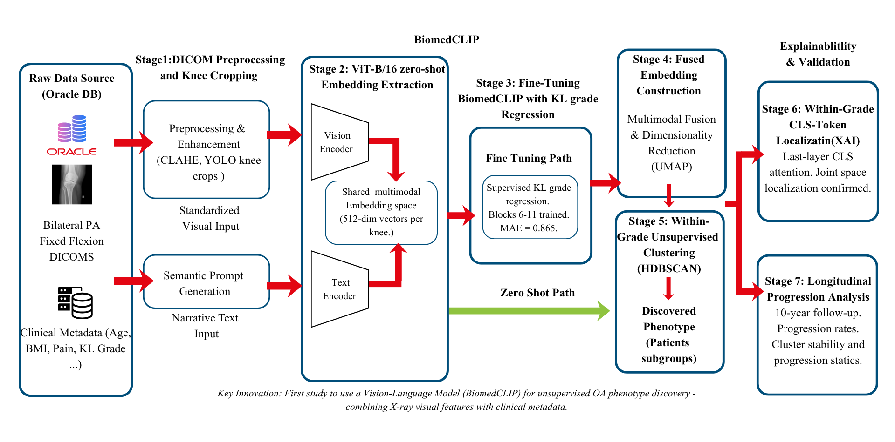
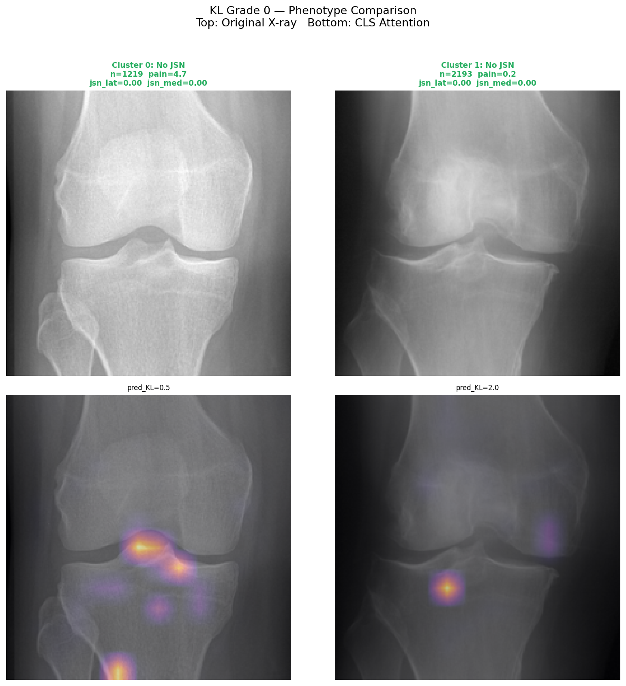
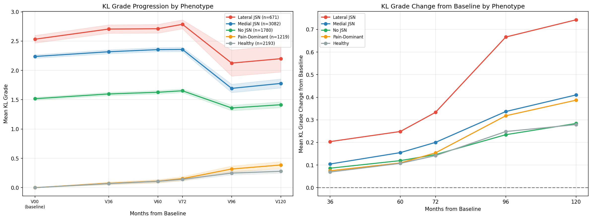

Final Year Project · University of Peradeniya · 2025
We fine-tuned a Vision-Language Model on 8,945 knee X-rays and found that patients with the same diagnosis can have fundamentally different disease — with different progression rates and different treatment needs.
01 — Background
Doctors currently grade knee osteoarthritis on a scale of 0 to 4 — the Kellgren-Lawrence (KL) system — based on what bone damage looks like on an X-ray. But this creates a deep problem: two patients with the same grade can feel completely different.
One patient with KL Grade 2 might have severe pain and rapid deterioration. Another with the same grade feels fine and stays stable for years. Current AI models are trained to reproduce this grading, meaning they're stuck in the same blind spot.
A patient can have a "Mild" X-ray but severe pain — or a "Severe" X-ray and no pain at all. This isn't noise; it's a signal that OA has multiple biological subtypes that one number cannot capture.
Our approach doesn't replace this system — it looks deeper inside each grade to find biologically distinct patient subgroups (phenotypes) using a Vision-Language Model trained on medical images.
02 — How It Works
From raw hospital X-rays to clinically validated patient phenotypes with 10-year longitudinal confirmation.

Fig. 1 — Full seven-stage architecture · BiomedCLIP fine-tuning · HDBSCAN within-grade clustering
03 — What We Found

KL Grade 0 — CLS attention · Cluster 0 (pain=4.7) vs Cluster 1 (pain=0.2)

Fig. — KL grade trajectories across 5 phenotypes · V00 to V120 (10 years)
04 — Discovered Phenotypes
These are the clinically meaningful groups our framework discovered — each requiring a different treatment strategy.
05 — Technical Details
Pre-trained on 15 million PubMed figure-caption pairs using InfoNCE contrastive loss. Its ViT vision encoder maps images to 512-dimensional vectors in a shared image-text embedding space.
microsoft/BiomedCLIP-PubMedBERT_256-vit_base_patch16_224Transformer blocks 0–5, patch embed, positional embed, and CLS token are frozen (152.9M params). Only blocks 6–11 and the regression head are trained (42.9M params, 21.9% of model).
Prevents catastrophic forgettingMSE loss with sigmoid activation scaled to [0,4]. Regression imposes ordinal structure — KL grades are treated as continuous, not discrete classes. This avoids hard decision boundaries that reproduce existing bias.
AdamW · lr=5e-4 · cosine annealingClustering independently inside each KL grade ensures discovered clusters represent phenotypic variation — not severity differences that are already known. Noise points are rejected rather than forced into clusters.
min_cluster_size tuned per grade06 — Research Team
Supervisors